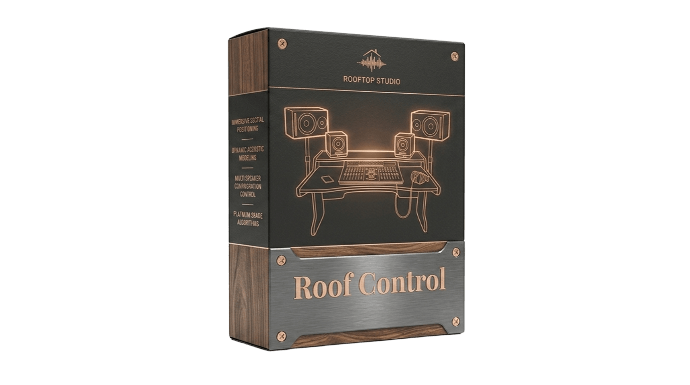

Инструменты от звукорежиссера для звукорежиссеров

Решение для сведения и проверки микса в наушниках. Создано специально для REAPER.
Универсальная версия плагина. Сейчас находится в стадии открытой беты.
Версия для macOS (VST/AU) недоступна в настоящее время.
Все мои плагины доступны бесплатно, потому что я твердо убежден, что хороший звук должен быть доступен каждому.
Если мое ПО помогаем вам, вы можете сказать финансовое "спасибо".
Rooftop Studio — это пространство, где приоритетом является ваше творческое спокойствие.
Я не навязываю «правильное» звучание. Моя задача как звукорежиссера — сохранить те чувства и смыслы, которые вы вложили в свою музыку. Ваш микс должен звучать так, как его слышите именно вы. Если вам близок мой подход, нажимайте кнопку ниже.